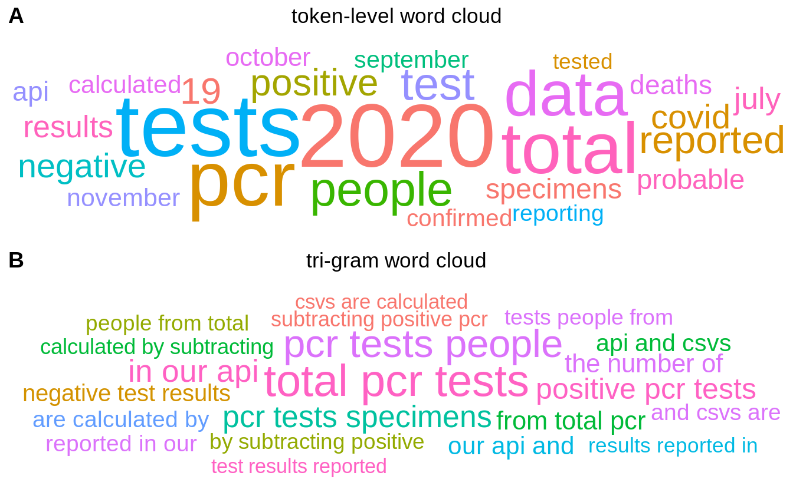

COVID-19 is a global pandemic that affects our health and life. By exploring the COVID-19 condition, we can make take possible actions to better contain its spread and make plans for the future. In this project, we mainly study the COVID-19 condition in the United States. The data for this study coms from https://covidtracking.com/data/api and https://covid.cdc.gov/covid-data-tracker/#demographics
How is the COVID-19 condition in the United States now? The question can be answered from the following perspectives:
Here is the summary of the latest numbers about the total tests, accumulated confirmed case numbers, accumulated deaths, accumulated recoveries.
| date | total tests | accumulated confirmed case numbers | accumulated recoveries | accumulated deaths |
|---|---|---|---|---|
| 20201117 | 170315721 | 11202899 | 4293640 | 239784 |
The tendency of COVID-19 can reflect how will this pandemic will proceed into the future.We can illustrate the pandemic tendency using three important variables: New COVID-19 Tests, New Positive Cases, New Death Cases.
Insight:
Different age groups may have different susceptibility towards the virus due to their different immune levels. And the virus infection may also differs with respect to races and ethnicities.
df_case = fread("./data/cases_by_race_ethnicity__all_age_groups.csv")
df_death = fread("./data/deaths_by_race_ethnicity__all_age_groups.csv")
df_case$label = paste(df_case$Count, "(", df_case$Percentage, "%)", sep="")
df_death$label = paste(df_death$Count, "(", df_death$Percentage, "%)", sep="")
df_case$type = "cases"
df_death$type = "deaths"
df = rbind(df_case,df_death)
colnames(df_case)[1] = "Race_Ethnicity"
colnames(df_death)[1] = "Race_Ethnicity"
df$Percentage = as.numeric(df$Percentage)
fig <- plot_ly()
fig <- fig %>% add_pie(data = df_case, labels = ~Race_Ethnicity, values = ~Count,
name = "Cases",
domain = list(x = c(0, 0.4), y = c(0.2, 1)))
fig <- fig %>% add_pie(data = df_death, labels = ~Race_Ethnicity, values = ~Count,
name = "Deaths", domain = list(x = c(0.6, 1), y = c(0.2, 1)))
fig <- fig %>% layout(title = paste("Infection status of different Race_Ethnicity","Left: case numbers", "Right: death numbers", sep="\n"), showlegend = T, legend=list(x=100,y=0.5),
xaxis = list(showgrid = FALSE, zeroline = FALSE, showticklabels = TRUE),
yaxis = list(showgrid = FALSE, zeroline = FALSE, showticklabels = TRUE))
figInsight: - White Non-Hispanic has both the highest infection rate and covid-death rate, whereas Asian Non-Hispanic, American Indian, Native Hawaiian has significantly low infection rate and death rate.
Insight:
The population infection rate in different states can serve as an indicator of virus spreading level.
Insight: - Different states have different population infection rate now. Some states such as are serious than others. - The population infection rate has reached a significant level relative to the population indensity.
The text-mining of the notes gathered from every state are helpful for us to know the main topics. Here, we choose to display them using word tokens and tri-grams.

Insights: - “PCR test” is the most important information across all states. It means that most states is mainly focusing on COVID-19 testing now.
How is the COVID-19 condition in the United States now?
To begin with, the COVID-19 condition is not optimistic now, we can see the huge numbers of cases in the overview part. Firstly, the infection is still continuously growing with a higher and higher growth rate. Secondly, the virus infections and impacts are different in terms of different age groups and races/ethnicities. Thirdly, The population infection rate is different across different states and has already reached a significant level of around 2% now. Finally, most states are mainly working on doing COVID-19 testing now, this is the key information we should pay attention to.